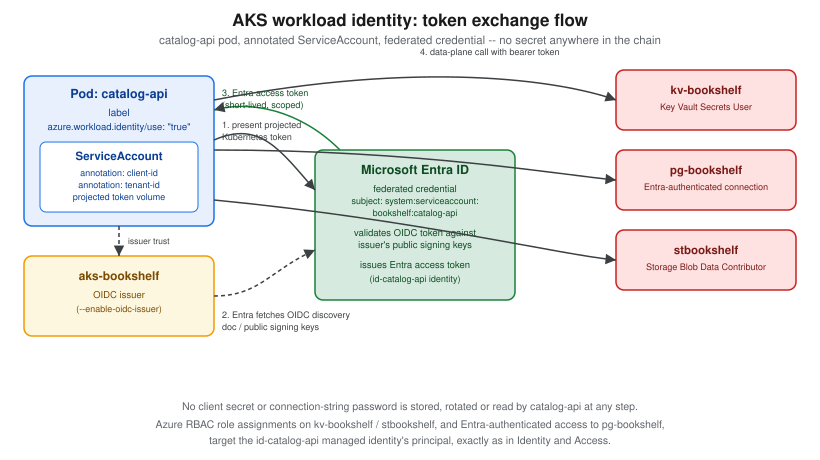

Deploying Microservices on AKS
|
This content was generated with the assistance of AI and should be verified against the official documentation before being relied on in production. |
Examples on this page target Azure CLI 2.90.0, the aks-preview extension (needed only for the handful of
commands explicitly marked preview below — most of this page’s features, including Gateway API and workload
identity, are GA and need no extension), AKS Kubernetes 1.35 and 1.36 (generally available) with 1.37 preview,
KEDA managed add-on versions tracking each Kubernetes minor version (checked 2026-09-26). AKS follows a
three-GA-minor-version support window and requires sequential minor-version upgrades (1.34 → 1.35 → 1.36,
never skipping one), so re-verify current version support against
Supported Kubernetes versions in AKS and
az aks get-versions --location $LOCATION --output table before planning an upgrade.
This page is deliberately scoped to workload deployment: the Bookshelf services (catalog-api, orders-api,
notifier) running as Kubernetes resources on top of an already-existing cluster. Creating aks-bookshelf
itself — node pools, networking (CNI/kubenet, network policy), private cluster endpoints, and cluster-level
autoscaling of nodes — is covered on AKS Clusters; this page assumes that cluster
already exists, plus acrbookshelf, stbookshelf, pg-bookshelf (database catalog) and kv-bookshelf from
Getting Started with Azure and Identity and Access. For the broader decision
of whether a workload belongs on AKS at all, see
Choosing a Compute Service and the decision table near the end of this page. Generic Kubernetes concepts are covered in the
Kubernetes section.
export RG=rg-bookshelf
export LOCATION=eastus2
export ACR=acrbookshelf
export CLUSTER=aks-bookshelf
az aks get-credentials --resource-group "$RG" --name "$CLUSTER" --overwrite-existing
kubectl get nodesRequest path overview
The Bookshelf services as Deployments and Services
Each Bookshelf service is an ordinary Kubernetes Deployment (the desired replica set, rolling-update strategy,
container image and resource requests/limits) fronted by a Service (the stable in-cluster DNS name and virtual
IP that load-balances across the Deployment’s pods). catalog-api and orders-api are HTTP services reached via
the gateway/ingress layer below; notifier has no Service at all — it only consumes messages, so it needs no
inbound network identity.
apiVersion: apps/v1
kind: Deployment
metadata:
name: catalog-api
namespace: bookshelf
labels:
app: catalog-api
spec:
replicas: 3
revisionHistoryLimit: 3
strategy:
type: RollingUpdate
rollingUpdate:
maxSurge: 1
maxUnavailable: 0
selector:
matchLabels:
app: catalog-api
template:
metadata:
labels:
app: catalog-api
azure.workload.identity/use: "true"
spec:
serviceAccountName: catalog-api
topologySpreadConstraints:
- maxSkew: 1
topologyKey: topology.kubernetes.io/zone
whenUnsatisfiable: ScheduleAnyway
labelSelector:
matchLabels:
app: catalog-api
containers:
- name: catalog-api
image: acrbookshelf.azurecr.io/com.example.bookshelf/catalog-api:1.4.2
ports:
- containerPort: 8080
resources:
requests:
cpu: 250m
memory: 512Mi
limits:
memory: 768Mi
readinessProbe:
httpGet:
path: /actuator/health/readiness
port: 8080
initialDelaySeconds: 5
periodSeconds: 10
livenessProbe:
httpGet:
path: /actuator/health/liveness
port: 8080
initialDelaySeconds: 15
periodSeconds: 20
---
apiVersion: v1
kind: Service
metadata:
name: catalog-api
namespace: bookshelf
spec:
selector:
app: catalog-api
ports:
- port: 80
targetPort: 8080Two things worth calling out explicitly:
-
No
limits.cpuis set. A hard CPU limit throttles a pod even when the node has spare CPU to give, which shows up as latency spikes under load without ever showing up as an OOM kill — setting a CPU request (for scheduling and fair sharing) without a CPU limit is the commonly recommended pattern; memory, by contrast, gets both a request and a limit because an over-budget memory limit is a clean, visible OOM kill rather than silent throttling. -
azure.workload.identity/use: "true"andserviceAccountName: catalog-apiare what wire this pod to Workload identity: reaching Key Vault, PostgreSQL and Storage without secrets below — nothing else in this manifest holds a secret.
In the Azure portal
-
Open the AKS cluster blade → Workloads to see Deployments, Pods and their rollout status per namespace.
-
Select Add → Deploy to apply a YAML manifest through the portal’s built-in editor (paste the manifest above), or use Kubernetes resources → Namespaces to create
bookshelffirst if it does not exist. -
Select a running Deployment to see replica counts, rollout history, and pod-level logs/exec directly from the blade.
-
Services and ingresses (left navigation under Kubernetes resources) lists every
Service, its cluster IP, and (once one exists) its external IP or hostname.
With the Azure CLI
kubectl create namespace bookshelf --dry-run=client -o yaml | kubectl apply -f -
kubectl apply -f catalog-api-deployment.yaml
kubectl apply -f orders-api-deployment.yaml
kubectl apply -f notifier-deployment.yaml
kubectl -n bookshelf rollout status deployment/catalog-api
kubectl -n bookshelf get pods,svc -l app=catalog-apiPackaging Bookshelf as a Helm chart
A raw manifest per service works for a single environment, but Bookshelf ships three services across dev/stage/ prod with only image tags and a handful of values differing between them — exactly what Helm templates and per-environment values files are for. A minimal chart layout:
bookshelf-chart/
Chart.yaml
values.yaml
values-prod.yaml
templates/
catalog-api-deployment.yaml
catalog-api-service.yaml
orders-api-deployment.yaml
orders-api-service.yaml
notifier-deployment.yaml
serviceaccount.yamlvalues.yaml parameterizes exactly the fields that change per release or per environment (image tag, replica
counts, resource requests):
catalogApi:
image:
repository: acrbookshelf.azurecr.io/com.example.bookshelf/catalog-api
tag: "1.4.2"
replicaCount: 3
resources:
requests:
cpu: 250m
memory: 512Mi
limits:
memory: 768Mi
ordersApi:
image:
repository: acrbookshelf.azurecr.io/com.example.bookshelf/orders-api
tag: "1.2.0"
replicaCount: 2
notifier:
image:
repository: acrbookshelf.azurecr.io/com.example.bookshelf/notifier
tag: "1.1.7"In the Azure portal
There is no portal equivalent to helm install/helm upgrade — Helm releases are managed from the CLI or from
a CI/CD pipeline. The portal’s Workloads blade (above) shows the resulting Deployments and Pods regardless of
whether they were created by kubectl apply or by Helm, since Helm ultimately talks to the same Kubernetes API.
With the Azure CLI
helm upgrade --install bookshelf ./bookshelf-chart \
--namespace bookshelf --create-namespace \
--values ./bookshelf-chart/values-prod.yaml \
--set catalogApi.image.tag=1.4.3 \
--wait --timeout 5m
helm list --namespace bookshelf
helm history bookshelf --namespace bookshelf
# Roll back to the previous release if the new tag regresses
helm rollback bookshelf --namespace bookshelf--wait blocks until every Deployment reports the requested number of ready replicas (respecting readiness
probes), so a CI pipeline that runs this command fails fast on a bad rollout instead of reporting success before
the new pods are actually healthy.
References: Helm — helm upgrade, Develop on AKS using Helm.
Ingress and Gateway API
Bookshelf has three supported paths to get external traffic into catalog-api and orders-api, plus one that is
being retired. All three coexist on AKS; which one to reach for depends on how much traffic-management
sophistication is needed and whether a service mesh is already in play. The generic API is explained in
Gateway API.
The application routing add-on with Gateway API (recommended)
The application routing add-on’s Kubernetes Gateway API implementation is the
now-GA, recommended default ingress path on AKS, and is the path AKS Automatic clusters enable by default from
AKS 1.36 onward. It runs a lightweight, AKS-managed Istio control plane purely to manage Gateway/HTTPRoute
infrastructure — no sidecar injection, no Istio CRDs on Bookshelf’s own workloads — distinct from the full
Istio service mesh add-on further below. --enable-gateway-api installs the AKS-managed Gateway API CRDs;
--enable-app-routing-istio turns on the application routing add-on’s Istio-based Gateway API implementation
itself; the two cannot run at the same time as the separate Istio service mesh add-on (disable one before
enabling the other).
az aks update \
--resource-group "$RG" \
--name "$CLUSTER" \
--enable-gateway-api \
--enable-app-routing-istio
kubectl get pods -n aks-istio-system
kubectl get gatewayclassapiVersion: gateway.networking.k8s.io/v1
kind: Gateway
metadata:
name: bookshelf-gateway
namespace: bookshelf
spec:
gatewayClassName: approuting-istio
listeners:
- name: http
port: 80
protocol: HTTP
allowedRoutes:
namespaces:
from: Same
---
apiVersion: gateway.networking.k8s.io/v1
kind: HTTPRoute
metadata:
name: catalog-api
namespace: bookshelf
spec:
parentRefs:
- name: bookshelf-gateway
hostnames: ["catalog.bookshelf.example.com"]
rules:
- matches:
- path:
type: PathPrefix
value: /
backendRefs:
- name: catalog-api
port: 80The legacy managed NGINX add-on
The application routing add-on’s original managed NGINX mode (app-routing, based on the classic Ingress API
and upstream ingress-nginx) still works, but its clock is running out: the upstream ingress-nginx project’s
own maintenance ends March 2026, and Microsoft’s own critical-security-patch support for the managed NGINX
add-on’s Ingress resources ends November 2026. Existing Ingress manifests keep functioning fully supported
until that date; new Bookshelf ingress should go straight to the Gateway API implementation above (or, for
sidecar-free advanced traffic shaping, Application Gateway for Containers below) rather than adopting NGINX for
the first time.
Application Gateway for Containers (ALB Controller)
Application Gateway for Containers is a separate, more heavyweight Azure load-balancing service (distinct from
classic Application Gateway) that a Kubernetes-native ALB Controller add-on drives from Gateway and
HTTPRoute resources, translating them into Azure-managed traffic rules instead of running Envoy proxies inside
the cluster. It is the option to reach for when a workload wants Gateway API-style traffic management — health
probes, weighted traffic splitting, header-based routing — backed by an Azure-native data plane rather than
cluster-hosted proxy pods, or alongside classic Ingress resources it also understands.
az provider register --namespace Microsoft.ServiceNetworking
az provider register --namespace Microsoft.NetworkFunction
az extension add --name alb
az extension add --name aks-preview
az feature register --namespace Microsoft.ContainerService --name ManagedGatewayAPIPreview
az feature register --namespace Microsoft.ContainerService --name ApplicationLoadBalancerPreview
az aks update --resource-group "$RG" --name "$CLUSTER" \
--enable-oidc-issuer --enable-workload-identity
az aks update --resource-group "$RG" --name "$CLUSTER" \
--enable-gateway-api --enable-application-load-balancer
kubectl get pods -n kube-system | grep alb-controller
kubectl get gatewayclass azure-alb-external -o yamlThe add-on (currently in preview, hence the aks-preview extension and the two feature registrations) requires
Azure CNI or Azure CNI Overlay networking and workload identity on the cluster. It creates and wires its own
controller identity — applicationloadbalancer-<cluster-name> in the node resource group, with Network
Contributor, AppGw for Containers Configuration Manager and Reader role assignments and a federated credential
for system:serviceaccount:kube-system:alb-controller-sa — so no identity setup is needed on the Bookshelf side.
That identity and namespace cannot be customized; a deployment that needs its own id-alb-controller identity
installs the controller with Helm instead, which means creating that identity, its federated credential for
azure-alb-system:alb-controller-sa and its role assignments by hand first, as the Helm quickstart walks through.
Once the ALB Controller add-on and its GatewayClass (azure-alb-external) are installed, a canary rollout of
orders-api splits traffic between two backend `Service`s by weight:
apiVersion: gateway.networking.k8s.io/v1
kind: HTTPRoute
metadata:
name: orders-api
namespace: bookshelf
spec:
parentRefs:
- name: bookshelf-alb-gateway
rules:
- backendRefs:
- name: orders-api-stable
port: 80
weight: 90
- name: orders-api-canary
port: 80
weight: 10TLS for either Gateway API path terminates against a certificate stored in kv-bookshelf — the application
routing operator can provision and sync a SecretProviderClass/Kubernetes Secret automatically from a
Key-Vault-backed listener certificate and an Azure DNS zone, driven by the same workload-identity annotations
covered below, rather than a manually rotated TLS secret.
Service-to-service traffic and the Istio service mesh add-on
catalog-api, orders-api and notifier also talk to each other inside the cluster (orders-api calling
catalog-api to validate a book before placing an order, for instance). The AKS-managed Istio-based service
mesh add-on is the option when that internal traffic needs mutual TLS, fine-grained retries/timeouts, or
weighted canary routing between two revisions of the same internal service — capability the plain Service
objects above do not provide on their own, and a heavier commitment than Gateway API ingress alone, since it
injects an Envoy sidecar into every meshed pod.
az aks mesh enable --resource-group "$RG" --name "$CLUSTER"
kubectl label namespace bookshelf istio.io/rev=asm-1-27 --overwrite
kubectl rollout restart deployment -n bookshelfA PeerAuthentication enforcing strict mTLS between orders-api and catalog-api:
apiVersion: security.istio.io/v1
kind: PeerAuthentication
metadata:
name: default
namespace: bookshelf
spec:
mtls:
mode: STRICTA weighted VirtualService/DestinationRule pair canarying 10% of internal traffic to a new catalog-api
revision:
apiVersion: networking.istio.io/v1
kind: DestinationRule
metadata:
name: catalog-api
namespace: bookshelf
spec:
host: catalog-api
subsets:
- name: stable
labels:
version: stable
- name: canary
labels:
version: canary
---
apiVersion: networking.istio.io/v1
kind: VirtualService
metadata:
name: catalog-api
namespace: bookshelf
spec:
hosts:
- catalog-api
http:
- route:
- destination:
host: catalog-api
subset: stable
weight: 90
- destination:
host: catalog-api
subset: canary
weight: 10The add-on does not auto-upgrade: it can be enabled on an auto-upgrading cluster (including AKS Automatic), but its own Istio minor revision is not bumped when the cluster’s Kubernetes version is — a stale revision left unattended can eventually block the cluster’s own automatic upgrade. Minor-revision upgrades use Istio’s canary revision-tag mechanism (the new revision’s control plane runs alongside the old one, and workloads move over by re-labelling their namespace), while patch upgrades apply in place; both must be triggered deliberately by running through the add-on’s own upgrade procedure rather than assumed to happen for free.
Autoscaling: HPA, KEDA and VPA
Three complementary autoscalers cover Bookshelf’s pods (node-level autoscaling of `aks-bookshelf’s pools is covered on AKS Clusters; the generic mechanics are in Kubernetes autoscaling):
- Horizontal Pod Autoscaler (HPA)
-
Built into Kubernetes; scales replica count off CPU/memory (or custom) metrics. Good fit for
catalog-api, whose load correlates with request volume/CPU.
apiVersion: autoscaling/v2
kind: HorizontalPodAutoscaler
metadata:
name: catalog-api
namespace: bookshelf
spec:
scaleTargetRef:
apiVersion: apps/v1
kind: Deployment
name: catalog-api
minReplicas: 3
maxReplicas: 10
metrics:
- type: Resource
resource:
name: cpu
target:
type: Utilization
averageUtilization: 70- KEDA add-on
-
Extends autoscaling to event sources outside CPU/memory — and to scale-to-zero — driven by
ScaledObject/ScaledJobresources instead of raw metrics.notifierhas no HTTP traffic to key off at all; it only has a Service Bus queue depth to react to, which is exactly KEDA’s use case. Enable it with--enable-keda; becausenotifieralso uses Workload identity: reaching Key Vault, PostgreSQL and Storage without secrets to reach Service Bus, enable workload identity before KEDA (KEDA’s operator pods need restarting to pick up the workload-identity environment otherwise). A KEDAScaledObjectnever coexists with a plain HPA on the same workload — create only one of the two per Deployment.
az aks update --resource-group "$RG" --name "$CLUSTER" --enable-kedaapiVersion: keda.sh/v1alpha1
kind: ScaledObject
metadata:
name: notifier
namespace: bookshelf
spec:
scaleTargetRef:
name: notifier
minReplicaCount: 0
maxReplicaCount: 8
triggers:
- type: azure-servicebus
metadata:
queueName: orders-notify
namespace: sb-bookshelf
authenticationRef:
name: notifier-servicebus-auth
---
apiVersion: keda.sh/v1alpha1
kind: TriggerAuthentication
metadata:
name: notifier-servicebus-auth
namespace: bookshelf
spec:
podIdentity:
provider: azure-workload
identityId: <id-notifier-client-id>The azure-workload provider authenticates as the KEDA operator’s own keda-operator service account in
kube-system, not as notifier’s pod — so the identity that reads the `orders-notify queue depth
(id-notifier here, reused for simplicity) needs a second federated credential for that subject, the
keda-operator service account needs annotating with its client ID (then a restart to inject the
workload-identity environment), and the identity needs a Service Bus data-plane role on sb-bookshelf. The AKS
KEDA workload-identity walkthrough grants Azure Service Bus Data Owner, because reading a queue’s message
count goes through the management operations that Azure Service Bus Data Receiver alone does not cover:
export AKS_OIDC_ISSUER=$(az aks show --resource-group "$RG" --name "$CLUSTER" \
--query "oidcIssuerProfile.issuerUrl" --output tsv)
az identity federated-credential create \
--name notifier-keda-federated-credential \
--identity-name id-notifier \
--resource-group "$RG" \
--issuer "$AKS_OIDC_ISSUER" \
--subject system:serviceaccount:kube-system:keda-operator \
--audience api://AzureADTokenExchange
az role assignment create \
--role "Azure Service Bus Data Owner" \
--assignee-object-id "$(az identity show --name id-notifier --resource-group "$RG" --query principalId -o tsv)" \
--assignee-principal-type ServicePrincipal \
--scope "$(az servicebus namespace show --name sb-bookshelf --resource-group "$RG" --query id -o tsv)"
kubectl annotate serviceaccount keda-operator -n kube-system \
azure.workload.identity/client-id="$(az identity show --name id-notifier --resource-group "$RG" --query clientId -o tsv)"
kubectl rollout restart deployment keda-operator -n kube-system- Vertical Pod Autoscaler (VPA)
-
Adjusts a pod’s own CPU/memory requests over time instead of replica count — the fit for
orders-apiif its actual usage drifts noticeably from the resource requests set in Rolling updates, probes, disruption budgets, resources and zone spreading below. On AKS 1.34 and later thevpa-recommender/vpa-updatercomponents run highly available (two replicas each) and can update resources in place instead of only by recreating the pod; VPA is preconfigured on AKS Automatic and optional, explicitly installed, on AKS Standard.
Because KEDA’s ScaledObject internally drives an HPA, do not also point a VPA at a workload an HPA/KEDA already
manages on the same resource dimension (CPU) — the two fight over the same knob. Pointing VPA at `orders-api’s
memory only, alongside an HPA scaling its replica count on CPU, avoids the conflict.
Workload identity: reaching Key Vault, PostgreSQL and Storage without secrets
Every Bookshelf pod that touches kv-bookshelf, pg-bookshelf or stbookshelf does so through Microsoft Entra
Workload ID, never a connection string or access key baked into a Secret. This is the same federation mechanism
introduced in Identity and Access; here it is wired to a specific ServiceAccount and
pod. --enable-oidc-issuer turns the cluster itself into an OIDC token issuer; --enable-workload-identity
installs the mutating admission webhook that projects a Kubernetes service account token into annotated pods.
az aks update \
--resource-group "$RG" \
--name "$CLUSTER" \
--enable-oidc-issuer \
--enable-workload-identity
export AKS_OIDC_ISSUER=$(az aks show --resource-group "$RG" --name "$CLUSTER" \
--query "oidcIssuerProfile.issuerUrl" --output tsv)
az identity federated-credential create \
--name catalog-api-federated-credential \
--identity-name id-catalog-api \
--resource-group "$RG" \
--issuer "$AKS_OIDC_ISSUER" \
--subject system:serviceaccount:bookshelf:catalog-api \
--audience api://AzureADTokenExchangeapiVersion: v1
kind: ServiceAccount
metadata:
name: catalog-api
namespace: bookshelf
annotations:
azure.workload.identity/client-id: <id-catalog-api-client-id>
azure.workload.identity/tenant-id: <tenant-id>The pod’s own azure.workload.identity/use: "true" label (already on the Deployment template above) is what
tells the webhook to actually mutate that pod; the label alone with no matching federated credential subject
authenticates nowhere, and a subject that does not exactly match system:serviceaccount:<namespace>:<name>
fails the token exchange rather than falling back silently. From there, catalog-api’s
`DefaultAzureCredential/azure-identity code (already covered in
Identity and Access) picks up WorkloadIdentityCredential automatically — the same
data-plane Azure RBAC roles from that page (Key Vault Secrets User on kv-bookshelf, Storage Blob Data
Contributor on stbookshelf) apply unchanged, just assigned to `id-catalog-api’s principal rather than a
system-assigned identity.

orders-api authenticates to pg-bookshelf the same way, via Microsoft Entra authentication for PostgreSQL
Flexible Server rather than a stored database password; notifier gets its own
identity (id-notifier) with a federated credential for its own ServiceAccount (subject
system:serviceaccount:bookshelf:notifier) to consume messages — plus, as shown in the KEDA section above, a
separate federated credential for system:serviceaccount:kube-system:keda-operator, because KEDA reads the queue
depth under the operator’s identity, not the pod’s.
Config and secrets
Bookshelf’s non-secret configuration (feature flags, external endpoint URLs, log levels) and its actual secrets (the PostgreSQL connection string’s non-identity parts, third-party API keys) are deliberately kept out of the Deployment manifests above:
-
Plain configuration comes from Kubernetes `ConfigMap`s, optionally synchronized from Azure App Configuration — covered in full, including the App Configuration Kubernetes Provider, on Runtime Configuration.
-
Anything secret-shaped is mounted from
kv-bookshelfthrough the Key Vault CSI driver (--enable-addons azure-keyvault-secrets-provider), not typed into a KubernetesSecretby hand — the driver itself authenticates to the vault using the same workload-identity pattern above, and can optionally mirror a mounted value into a nativeSecretfor a library that cannot read a CSI volume directly. The fullSecretProviderClasssetup is covered on Key Vault and Secrets.
Neither page’s content is repeated here; both slot into the Deployment templates above by volume mount or
envFrom reference once configured.
Rolling updates, probes, disruption budgets, resources and zone spreading
The catalog-api manifest earlier already applies most of the practices below directly; this section explains why each one is there.
- Rolling updates
-
strategy.rollingUpdate.maxUnavailable: 0guaranteescatalog-apinever drops below its current replica count mid-rollout (at the cost of briefly runningreplicas + maxSurgepods), which matters for a service every other Bookshelf component depends on; a less critical, purely internal service can tolerate a non-zeromaxUnavailablefor a faster, cheaper rollout. - Probes
-
A readiness probe controls whether a pod receives traffic right now (temporarily pulling an overloaded or still-starting pod out of the
Service’s endpoints without restarting it); a liveness probe controls whether the pod gets killed and recreated at all. Pointing both at the same endpoint with the same thresholds is a common mistake — a slow dependency then both stops traffic and triggers a restart loop, when only the former was wanted. A slower-starting JVM service typically also wants a `startupProbeso the liveness probe’s own timeout does not fire before the application has even finished booting. - PodDisruptionBudgets
-
Bound voluntary disruption (a node drain during a cluster upgrade,
kubectl drain) — never the involuntary kind (a node crashing). Without one, AKS is free to drain everycatalog-apipod on a node at once during a routine node-image upgrade.
apiVersion: policy/v1
kind: PodDisruptionBudget
metadata:
name: catalog-api
namespace: bookshelf
spec:
minAvailable: 2
selector:
matchLabels:
app: catalog-api- Resource requests/limits
-
Requests drive scheduling (a pod is only placed on a node with enough unreserved capacity) and are the basis the HPA above scales against; limits cap actual usage. See the CPU-limit caveat under The Bookshelf services as Deployments and Services above.
- Zone spreading
-
The
topologySpreadConstraintsblock on the catalog-api manifest keeps replicas balanced across availability zones (whenaks-bookshelf’s node pools span them — configured on AKS Clusters) so a single zone outage does not take out every replica of a service at once; `whenUnsatisfiable: ScheduleAnywayprefers even spread but still schedules the pod somewhere rather than leaving itPendingif a zone temporarily has no capacity.
In the Azure portal
-
Open the Deployment’s YAML tab (under Workloads) to edit
strategy, probes or resource values directly, or use Insights for live CPU/memory usage per pod to size requests/limits from actual data. -
Kubernetes resources → Horizontal pod autoscalers and Kubernetes resources → Namespace overview surface HPA status and PodDisruptionBudget compliance, respectively, without a
kubectlsession.
CI/CD
Two supported paths get a new Bookshelf image from a merged pull request onto aks-bookshelf:
- GitHub Actions
-
azure/loginauthenticates the workflow using the same OIDC federated-credential pattern as Workload identity: reaching Key Vault, PostgreSQL and Storage without secrets (covered from the identity side on Identity and Access, and end-to-end on Docker CI/CD with GitHub Actions), then the pipeline builds and pushes withaz acr buildbefore deploying with the Helm chart from earlier in this page.
permissions:
id-token: write
contents: read
jobs:
deploy:
runs-on: ubuntu-latest
steps:
- uses: actions/checkout@v4
- uses: azure/login@v2
with:
client-id: ${{ secrets.AZURE_CLIENT_ID }}
tenant-id: ${{ secrets.AZURE_TENANT_ID }}
subscription-id: ${{ secrets.AZURE_SUBSCRIPTION_ID }}
- run: |
az acr build --registry $ACR --image com.example.bookshelf/catalog-api:${{ github.sha }} ./catalog-api
- uses: azure/aks-set-context@v4
with:
resource-group: rg-bookshelf
cluster-name: aks-bookshelf
- run: |
helm upgrade --install bookshelf ./bookshelf-chart \
--namespace bookshelf \
--set catalogApi.image.tag=${{ github.sha }} \
--waitazd up-
For a Bookshelf environment that also wants its infrastructure (the cluster, ACR, Key Vault) declared alongside the app rather than pre-provisioned by hand,
azd upprovisions and deploys together from anazure.yamlplus Bicep, as introduced on Getting Started with Azure; this is a heavier commitment that suits standing up a new environment more than iterating on an existing one.
Container Apps vs. AKS for microservices
| Azure Container Apps | AKS | |
|---|---|---|
Deployment unit |
A managed Container App / job per service; Dapr and KEDA-style scaling built in |
Deployments, Services, Helm charts you own end to end |
Ingress/traffic-splitting |
Built-in revision-based traffic splitting, no Gateway API to manage yourself |
Full Gateway API / Istio / Application Gateway for Containers choice, and full control over it |
Service mesh |
Dapr sidecars for service invocation, pub/sub, state — not a full mesh |
Optional Istio add-on: mTLS, fine-grained routing, but sidecar overhead and an add-on to keep upgraded |
Autoscaling |
Built-in KEDA-based scaling per revision, including scale-to-zero, with none of the cluster to manage |
HPA/KEDA/VPA as covered above, but the underlying node pools are also this team’s responsibility |
Operational surface |
No nodes, no Kubernetes API, no cluster upgrades to plan |
Full Kubernetes API surface — CRDs, admission webhooks, custom schedulers — at the cost of owning all of it |
Best fit |
A handful of stateless services that do not need custom CRDs, a service mesh, or fine ingress control |
Many services, multiple teams, workloads that need CRDs/operators, a mesh, or ingress control this granular |
See Choosing a Compute Service for the fuller decision framework this table is drawn from, and Container Apps plus Container Apps: Scaling, Jobs and Dapr for the Container Apps side of this comparison in depth. For workloads already containerized with Compose/Swarm semantics or targeting OpenShift instead of AKS, Orchestration: Swarm Mode and Kubernetes and Kubernetes and OpenShift cover those adjacent paths; image build/push mechanics that feed any of these are covered on Registries and Docker Hub and Docker CI/CD with GitHub Actions.
Troubleshooting
- A pod stuck
Pending -
Usually insufficient schedulable capacity for the pod’s resource requests (not limits) on any node matching its
topologySpreadConstraints/affinity rules —kubectl describe podprints the scheduler’s exact rejection reason per node. Autoscaling the underlying node pool is a AKS Clusters concern, not something fixed from the workload manifest. - A pod
CrashLoopBackOff -
kubectl logs --previousshows the last crashed container’s output, which is usually either a startup-time dependency failure (database unreachable, workload-identity token exchange failing because the federated credential subject does not match theServiceAccountexactly) or a liveness probe firing before the application has finished starting (add astartupProbe, per Rolling updates, probes, disruption budgets, resources and zone spreading). - A
Gateway/HTTPRoutestuck without aProgrammedcondition -
kubectl describe gateway <name>andkubectl get gatewayclasssurface whether the underlying controller (the application routing Istio control plane, or the ALB Controller) itself is healthy; aGatewayClassthat never reachesAccepted: Truealmost always means the add-on installing it was never actually enabled on the cluster, or the wronggatewayClassNamewas used (approuting-istiovs.azure-alb-externalvs.istio, per the options covered above). - 401/403 calling Key Vault, PostgreSQL or Storage despite workload identity being "enabled"
-
Check, in order: the
ServiceAccountannotation’s client ID matches the intended managed identity exactly; the federated credential’s subject is exactlysystem:serviceaccount:<namespace>:<service-account-name>; the pod actually carries theazure.workload.identity/use: "true"label (an annotation in the wrong place is silently ignored); and the target resource’s Azure RBAC role assignment (from Identity and Access) was made against that same identity’s principal ID, not a leftover system-assigned one. - An Istio canary or app-routing Gateway API rollout that never auto-upgrades
-
Confirm this is expected, not a bug — the Istio service mesh add-on and the application routing Gateway API implementation each apply upgrades on their own release cadence rather than in lockstep with every AKS cluster upgrade; see Service-to-service traffic and the Istio service mesh add-on above.
Clean up
Tear down only the workload resources this page created, leaving aks-bookshelf itself and the shared services
it depends on intact:
helm uninstall bookshelf --namespace bookshelf
kubectl delete namespace bookshelf
kubectl delete gateways.gateway.networking.k8s.io --all --all-namespacesTo remove the whole Bookshelf resource group, including the cluster, ACR, storage account, PostgreSQL server and Key Vault built up across this and the linked pages:
az group delete --name "$RG" --yes --no-waitReferences
-
AKS application routing add-on with the Kubernetes Gateway API
-
Configure Azure DNS and TLS with the application routing Gateway API implementation
-
Deploy the ALB Controller add-on for Application Gateway for Containers
-
AKS autoscaling concepts — HPA, VPA, cluster autoscaler and KEDA
-
Azure Key Vault Provider for Secrets Store CSI Driver on AKS